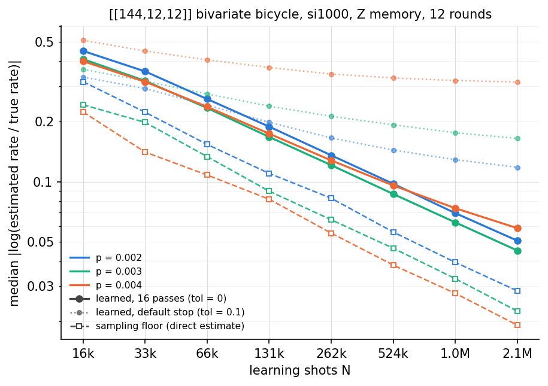

Learning Noise From Detector Data and Decoding With the Learned Rates
Noise learning estimates a detector error model’s mechanism probabilities from detector samples, then supplies them as priors to the decoder. See Noise Learning for the method and its assumptions. For the step-by-step experiment, see Learning Noise and Decoding with Learned Rates.
This page measures the whole workflow on a circuit-level noise model with 67,752 error mechanisms. We start from a single uniform guess, learn the rates from simulated device data, and compare the logical error rate (LER) of the decoder under three priors:
uniform – one rate for every mechanism, the starting point of learning (no knowledge of the noise);
learned – the rates returned by
learn_noise;oracle – the true rates of the circuit that generated the data (the best a prior can do).
The main results, measured on one GB200 with the bivariate-bicycle [[144,12,12]] code, 12 rounds and si1000 noise, are:
Learning from 2,097,152 shots takes about 15 minutes with the default settings and about one hour with
passes=16, tol=0.With
passes=16, tol=0the observed LER with the learned prior is 1.00x to 1.05x that of the oracle prior atp = 0.002,0.003and0.004. The confidence intervals overlap; these runs do not establish equivalence within 5%.Compared with the uniform prior, the learned prior lowers the LER by 22x, 30x and 9.8x at the three physical error rates.
The error of the learned rates keeps falling by about 1.4x for every doubling of the number of shots, down to 1.8x to 3.1x above the sampling floor at 2.1M shots.
The study uses the TCBP decoder with JOBS post-processing
(osd_method=4, osd_init_method="tcbp"). See Trajectory-Calibrated BP and Jittered OSD Beam Search
for these decoding options, Noise Learning for the learning step, and
Accuracy and Latency of TCBP+JOBS for a performance study of the decoder itself.
Experiment Setup
Parameter |
Value |
|---|---|
GPU |
NVIDIA GB200 (one GPU per physical error rate) |
Code |
bivariate-bicycle |
Rounds |
12, Z-basis memory experiment |
Noise model |
|
Decoded DEM |
1,728 detectors, 67,752 error mechanisms, 12 observables |
Circuits |
tesseract-decoder test data ( |
TCBP model |
|
Learning data |
simulated detector shots from the circuit itself (stim detector sampler, |
Learning |
|
Uniform prior |
a single rate for all mechanisms: the |
Learned prior |
rates learned with |
Oracle prior |
the true DEM rates of the circuit |
BP |
sum-product ( |
Post-processing |
JOBS: |
|
|
Decoding data |
fresh simulated shots (stim detector sampler, |
Stopping rule per arm |
200 logical failures, or 2,000,000 shots, or 3,300 s of wall time, checked after every batch (an arm can overshoot 200 failures by up to one batch) |
Logical failure |
any of the 12 observables predicted wrongly, or a decoder output that does not reproduce the syndrome (none occurred) |
Software |
CUDA-Q QEC 0.9.0 pre-release, commit |
The “device” is simulated: detector samples are drawn from the si1000 circuit with stim, and
the true rates of that circuit are kept aside to score the result. The learning step never sees them.
With real hardware, pass the recorded detector data instead.
The si1000 circuits are the bivariatebicyclecodes test data of the
tesseract-decoder repository. The seeds are 1 (TCBP model), 10001 (learning
data) and 778 (decoding data).
Learning Time and Accuracy
Learning time is proportional to the number of shots and to the number of passes, and does not depend
on p. On one GB200 the default settings need about 0.43 ms per shot; passes=16 needs about four
times as long. The accuracy is the median over all 67,752 mechanisms of |log(learned rate / true rate)|
(0 is perfect; for scale, the uniform prior scores 1.29, 1.23 and 1.18 at p = 0.002, 0.003, 0.004).
Each accuracy cell reads “default / 16 passes (sampling floor)”.
Learning shots |
Time, default |
Time, 16 passes |
|
|
|
|---|---|---|---|---|---|
131,072 |
57 s |
227 s |
0.198 / 0.188 (0.110) |
0.239 / 0.167 (0.090) |
0.372 / 0.174 (0.082) |
524,288 |
227 s |
904 s |
0.144 / 0.098 (0.056) |
0.193 / 0.087 (0.046) |
0.330 / 0.096 (0.038) |
2,097,152 |
908 s |
3,620 s |
0.118 / 0.051 (0.028) |
0.165 / 0.045 (0.023) |
0.315 / 0.059 (0.019) |
The sampling floor is the same metric for rates estimated directly from the true rates with N
samples per mechanism. It is a lower bound for learning from detector data, not an expected end point.
Error of the Learned Rates Versus the Number of Shots

The plot shows the median |log(learned / true rate)| versus the number of learning shots, for
p = 0.002, 0.003, 0.004. Solid lines are passes=16, tol=0, dotted lines are the default settings,
and dashed lines with open squares are the sampling floor. Each point is a single sample.
With
passes=16, tol=0the error falls by about 1.4x for every doubling of the shots. At 2,097,152 shots it is 1.8x, 2.0x and 3.1x above the sampling floor forp= 0.002, 0.003, 0.004, and still falling.With the default settings the error flattens: at 2,097,152 shots it stays 4.2x, 7.3x and 16x above the floor. Every pass uses all the shots, but the default runs at most 4 passes (
passes=4), and every run here reached that limit; none was ended sooner bytol. Four passes are too few for the rates to converge, so with the default settings more shots give diminishing gains in accuracy.Below about 66,000 shots the default gives the smaller error in the learned rates: with so little data, additional passes do not help (at 16,384 shots and
p = 0.002the error is 0.451 with 16 passes against 0.334 with the default). This is a statement about the rates only; the logical error rate at 65,536 and 131,072 shots is given in the next sections.
Logical Error Rate Under the Three Priors
LER is failures divided by shots, with a 95% Clopper-Pearson interval. The learned rows use
passes=16, tol=0 and 2,097,152 learning shots.
|
Prior |
Shots |
Failures |
LER |
95% interval |
|---|---|---|---|---|---|
0.002 |
uniform |
221,184 |
203 |
9.18e-4 |
7.96e-4 – 1.05e-3 |
0.002 |
learned |
2,002,944 |
84 |
4.19e-5 |
3.35e-5 – 5.19e-5 |
0.002 |
oracle |
2,002,944 |
80 |
3.99e-5 |
3.17e-5 – 4.97e-5 |
0.003 |
uniform |
4,096 |
241 |
5.88e-2 |
5.18e-2 – 6.65e-2 |
0.003 |
learned |
106,496 |
207 |
1.94e-3 |
1.69e-3 – 2.23e-3 |
0.003 |
oracle |
102,400 |
200 |
1.95e-3 |
1.69e-3 – 2.24e-3 |
0.004 |
uniform |
4,096 |
2,330 |
0.569 |
0.554 – 0.584 |
0.004 |
learned |
4,096 |
237 |
5.79e-2 |
5.09e-2 – 6.55e-2 |
0.004 |
oracle |
4,096 |
231 |
5.64e-2 |
4.95e-2 – 6.39e-2 |
Learned versus oracle: the observed LER ratios are 1.05x, 1.00x and 1.03x at
p= 0.002, 0.003, 0.004, with overlapping intervals. These runs do not establish equivalence within 5% (see the statistical power below). With rates from the default settings the ratios are 1.06x, 1.20x and 1.39x.Learned versus uniform: the LER is 22x, 30x and 9.8x lower. The uniform prior also decodes slower, 10 to 20 times more time per shot.
Statistical power: at
p = 0.002the learned and oracle arms reached the 2,000,000-shot cap with only 84 and 80 failures, so their intervals are wide (about +-25%) and a difference of a few percent is not resolved. Atp = 0.003and0.004each arm stops at about 200 failures (relative interval about +-15%).Each arm decodes the same simulated shot stream and stops at its own failure count, so arms can differ in shot count (
p = 0.004: all three used the same first 4,096 shots). The comparison is not paired shot by shot. All results come from a single seed.
Choosing the Number of Passes
learn_noise runs at most passes passes (default 4) and stops earlier once a pass changes the
rates by less than tol (default 0.1). tol=0 always runs passes passes. Every default run on
this page reached the limit of 4 passes.
Setting |
Passes run |
Learning time at 2.1M shots (GB200) |
Median |
LER relative to oracle |
|---|---|---|---|---|
default ( |
4 |
about 15 min |
0.12 / 0.17 / 0.32 |
1.06x / 1.20x / 1.39x |
|
16 |
about 1 h |
0.051 / 0.045 / 0.059 |
1.05x / 1.00x / 1.03x |
The logical error rate with learned rates, relative to the oracle rates, for smaller learning samples
(same circuits, decoder, shot stream and stopping rule as above; each cell is p = 0.002 / 0.003 / 0.004):
Learning shots |
Setting |
Learning time (GB200) |
LER relative to oracle |
|---|---|---|---|
65,536 |
default ( |
29 s |
1.15x / 1.29x / 1.51x |
65,536 |
|
114 s |
1.19x / 1.10x / 1.09x |
131,072 |
|
227 s |
1.06x / 1.09x / 1.10x |
2,097,152 |
|
about 1 h |
1.05x / 1.00x / 1.03x |
At p = 0.003 and 0.004 these arms stop at about 200 failures, so each LER has a 95% interval of
about +-14%. The ratio of two such LERs has an interval of about +-20% when the two arms are treated as
independent. The arms share shots, and this estimate does not account for that. Differences of 0.1x
between the 16-pass rows are within it.
With
passes=16, tol=0the observed LER with the learned prior is within about 10% to 20% of the oracle LER already at 65,536 shots, and within about 10% at 131,072 shots.The default settings are fine for a quick first estimate. At 65,536 shots and
p>= 0.003 their LER is 1.3x to 1.5x that of the oracle, against about 1.1x with 16 passes.Below 65,536 shots only the rate-error comparison above is available (more passes fit the noise in the sample); the logical error rate was not measured there.
At 2.1M shots the error of the rates is still falling at 16 passes, so more passes or more shots would help further. Time grows linearly with both.
See Also
Noise Learning – what it provides and how to use it
Accuracy and Latency of TCBP+JOBS – performance study of the TCBP+JOBS decoder used on this page
Quantum Low-Density Parity-Check Decoder – the nv-qldpc-decoder overview